Toque no play aqui embaixo pra música começar
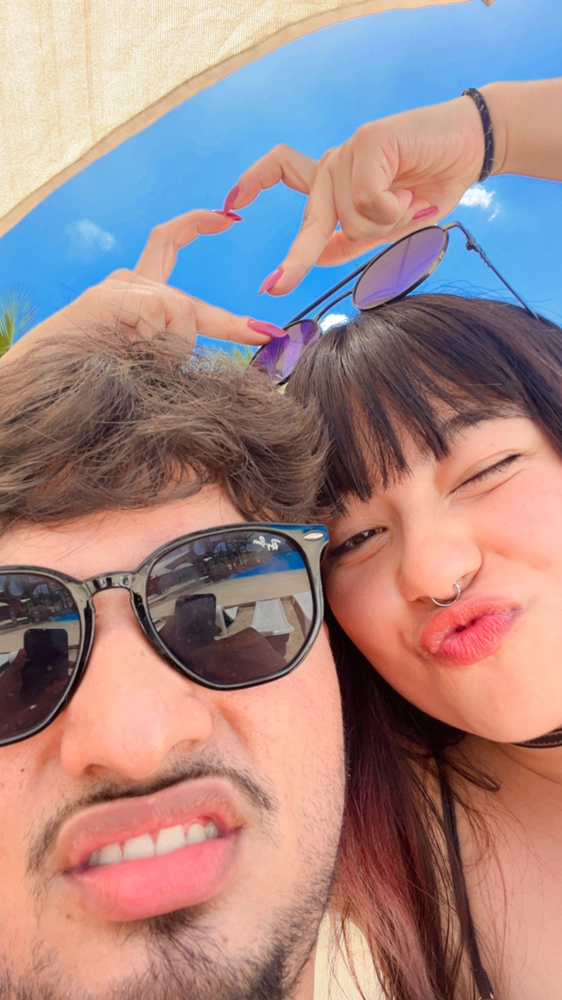
Vida, lembra daquele carro? A gente não parava. Faltava coragem pro beijo, mas assunto não faltava.
E eu, querendo ouvir sua risada de qualquer jeito, quiquei no banco. Você riu… mas riu meio sem jeito. Achou estranho. Eu entendo, olha a cena que eu inventei.
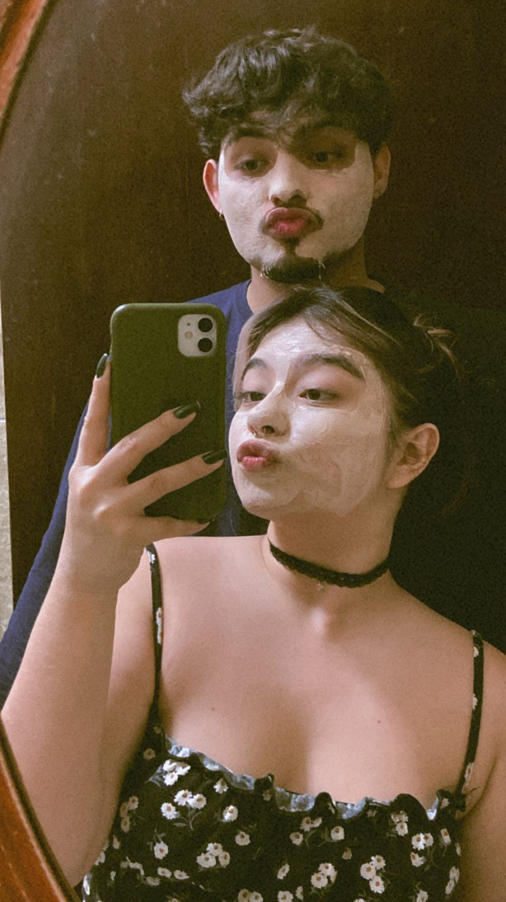
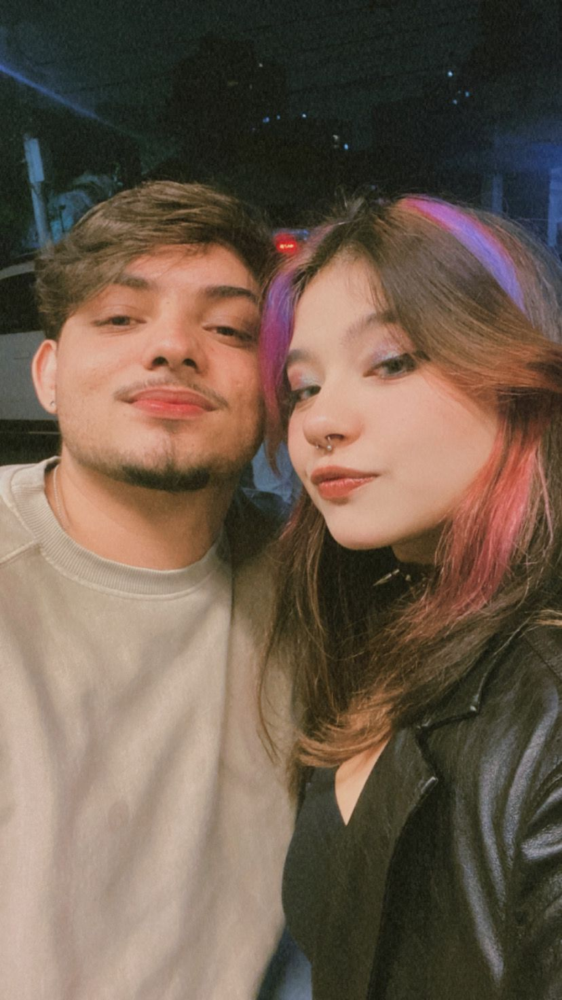
Horas depois, tomei coragem e te beijei. E o beijo, que eu tanto tinha esperado, foi só um detalhe. Eu já tava apaixonado.
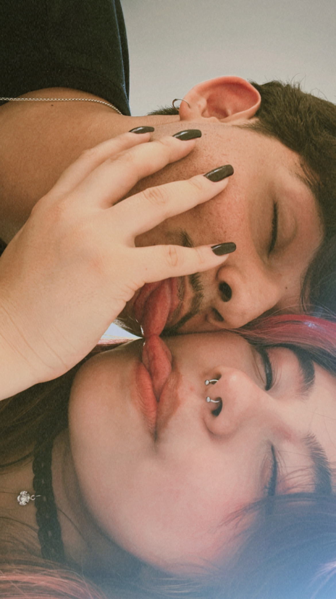
Lá em casa, na minha cama, entre um beijinho e outro seu, olhei pra sua cara e a coragem apareceu. “Eu te amo.” Até que enfim, falei.
Três palavrinhas, Vida. E olha o tanto que eu ensaiei.
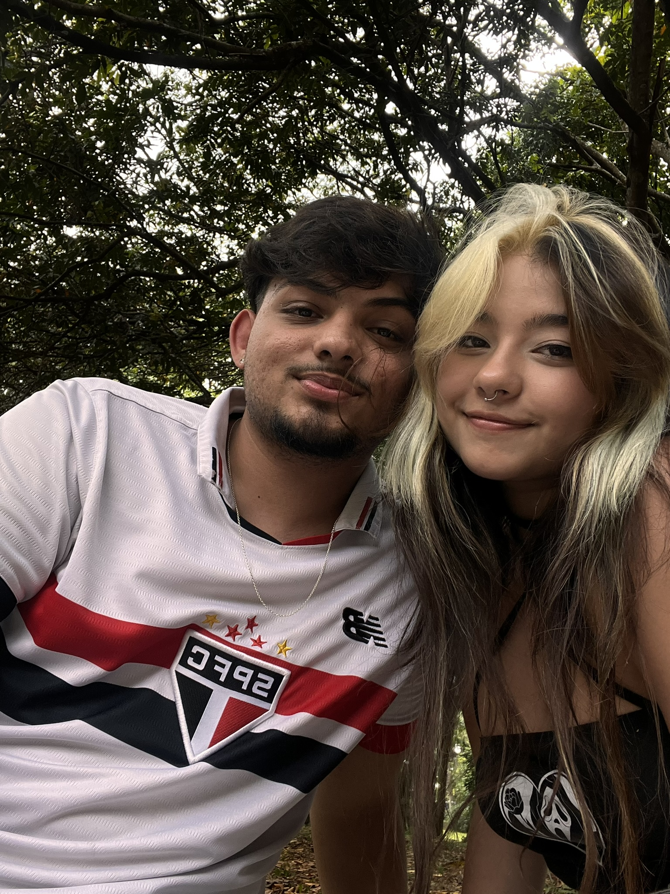
Naquele dia, achei tão difícil dizer. Hoje, o difícil é te olhar e não dizer.
Morro do Elefante, na lojinha
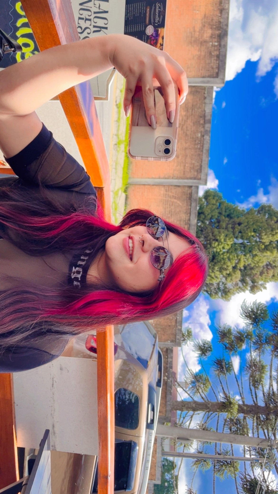
Lá no Morro do Elefante, anel de coco na mão, “olha aqui sua aliança”, eu disse, todo bobão.
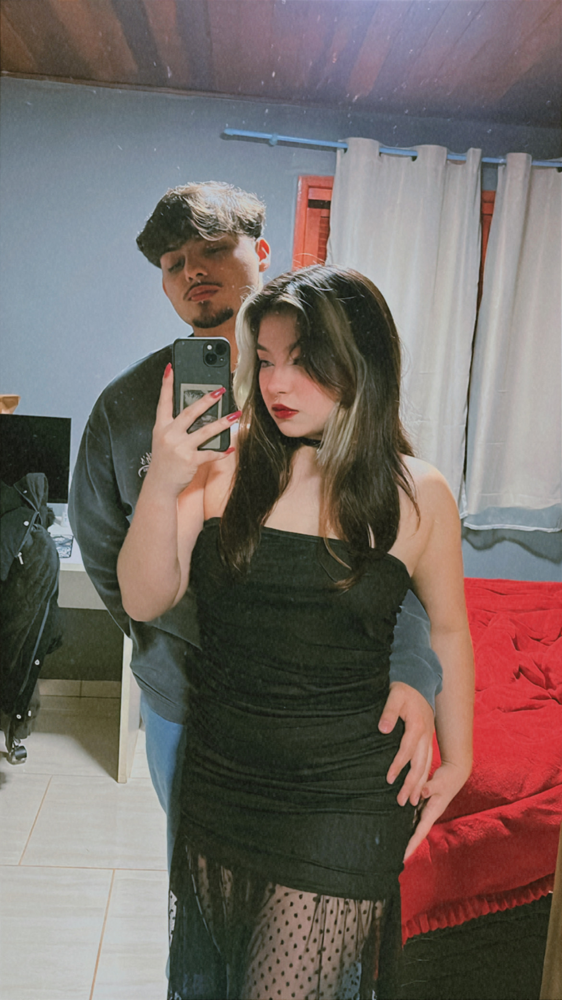
Você ouviu a gracinha e tirou sua conclusão: “Esse aí não vai me pedir em namoro, não.”
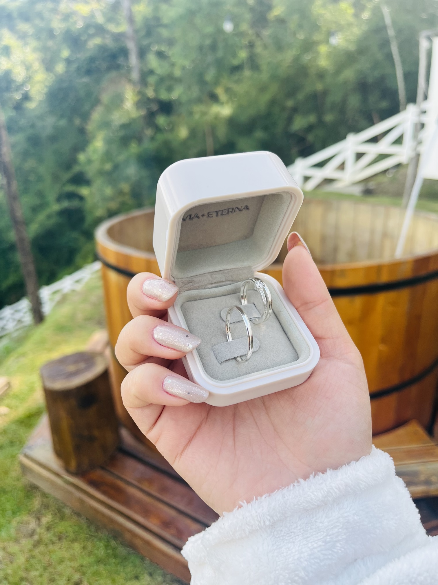
Podia ter feito o pedido lá em cima, com a vista inteira. Fui pedir logo tentando acender a fogueira. E você sem entender se era sério ou brincadeira. Vida, sério era o pedido. A escolha do lugar foi a minha cara, de primeira.
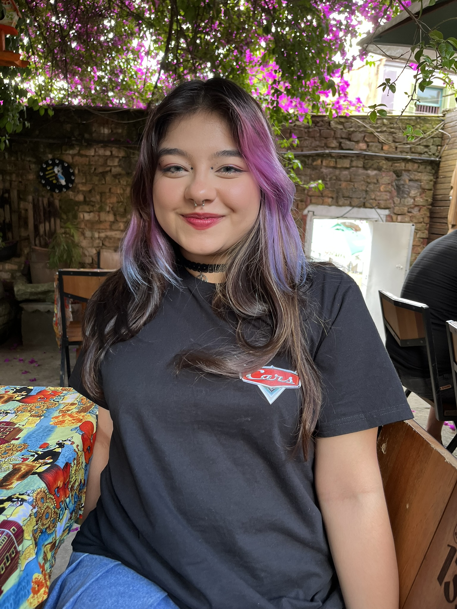
Hoje, quando chega o japonês, eu já olho pra você. Gosto de ver sua alegria antes mesmo de comer. E quando não gosta? Nem precisa me contar. Sua cara já contou antes de você falar.
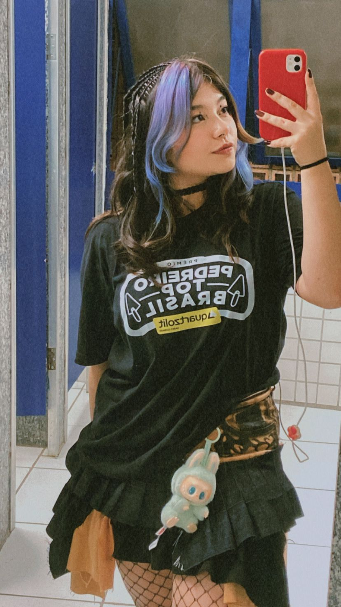
Aí você solta um “movida” com aquele sotaque meu. Era mania minha. Quando foi que virou seu?
No carro eu fiz de tudo pra te arrancar um sorriso. Hoje um “movida” seu já me desmonta de riso.
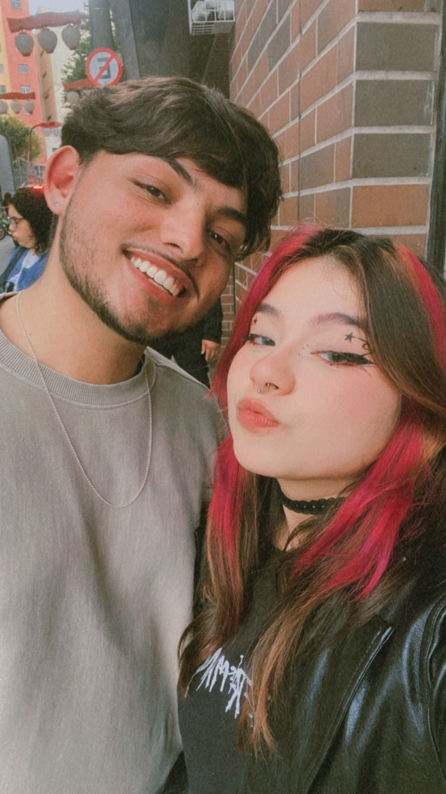
Feliz aniversário, meu amor. Ainda quero te fazer rir, mesmo que você ache esquisito o que vem por aí. E se às vezes falta coragem, se a frase sai sem jeito, eu te amo. Pra dizer isso, até sem jeito eu me ajeito.
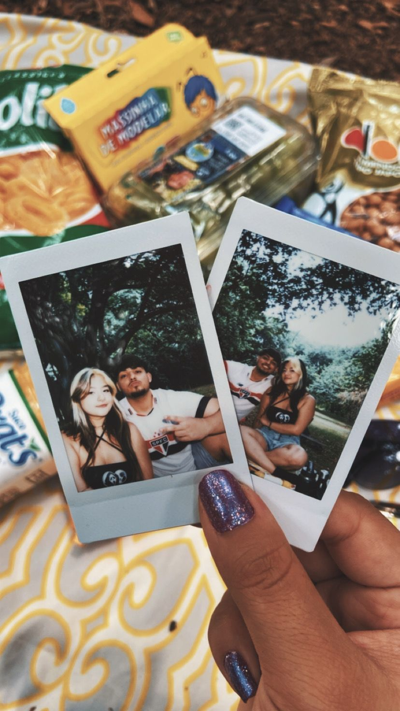
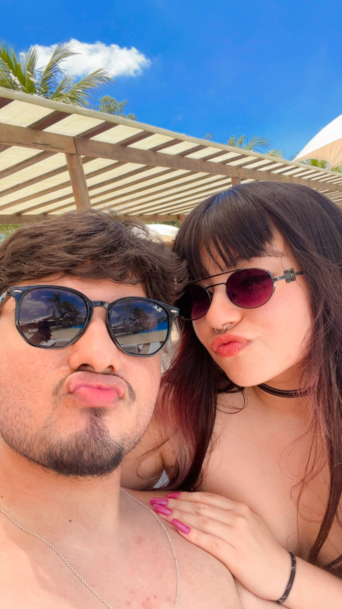
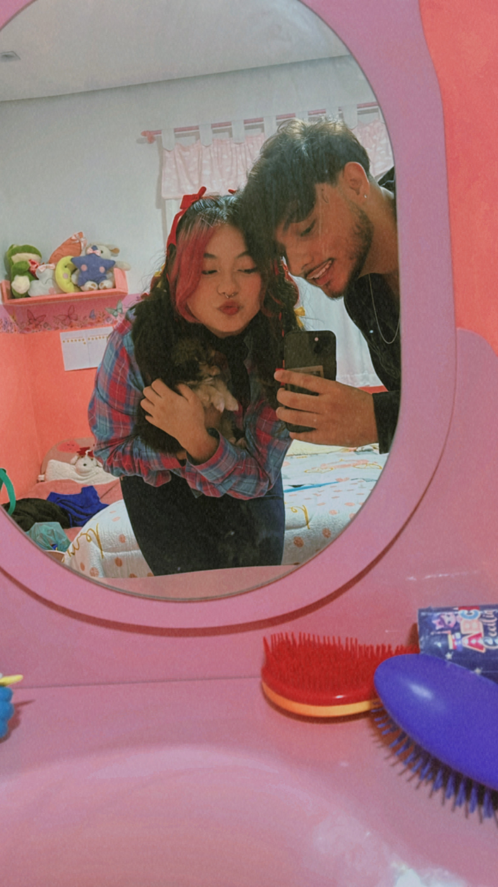
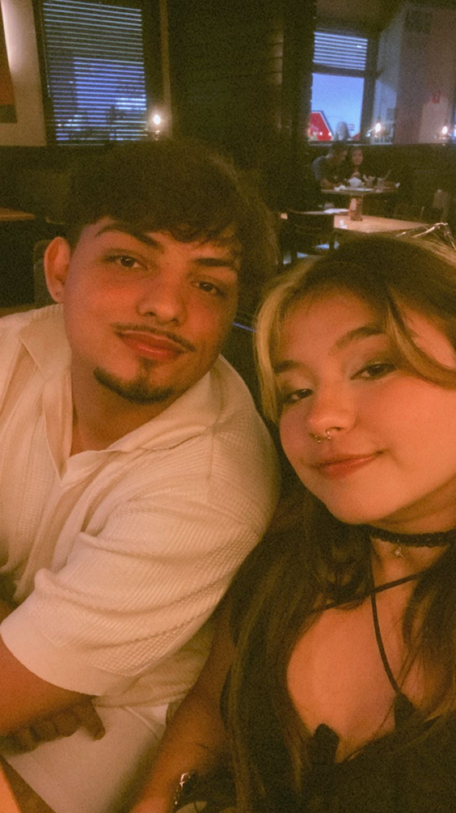
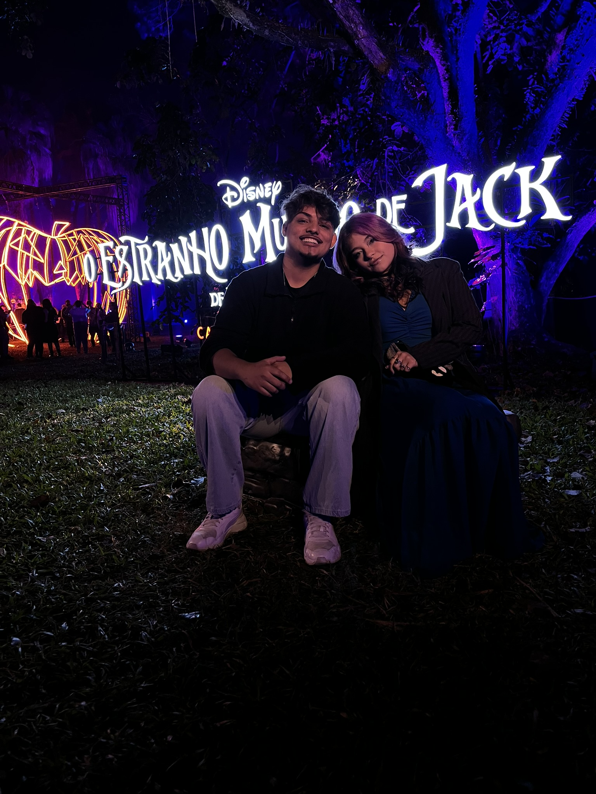
Pra Bell, de Kaique